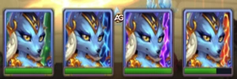

レリックは、 ヒーローウォーズ・アライアンスに導入された機能の中でも、特に魅力的なものの一つです。ヒーローに新たな力を与えるだけでなく、バトルの体験そのものも変化させます。
レリックの解放方法や仕組み、そして強いチームを作るうえでなぜ重要なのか、疑問に思ったことはありませんか。この詳しいガイドでは、知っておきたい情報をすべて順に解説します。
目次
レリックの基本
レリックの基本的な役割は、ヒーローに 新たなスキル を与え、既存のスキルも強化することです。スキルの強化に加えて、レリックは各ヒーローの二つのサブステータスも上昇させます。どのステータスが上昇するかは、そのヒーローのスキルの効果がどのステータスに応じて伸びるかによって決まります。
ゲーム序盤の チームレベル15でレリック画面を開けるようになります。ただし、その時点ですぐにレリックを解放できるわけではありません。レリックを利用できるようになるには、ヒーローが レベル50 に到達し、少なくとも 進化スターを四つ獲得している必要があります。
レリックを持つヒーローには、 ソムナ、 アラクネのほか、以下の魔法攻撃型と物理攻撃型の表に掲載されたヒーローが含まれます。レリックは終盤の育成を支える重要な要素になりつつあるため、公式ニュースやイベントの情報を常にチェックしておきましょう。
魔法攻撃型レリックの強化ステータス
魔法攻撃型のレリックは、 体力 と 魔法攻撃の両方を上昇させます。以下の三つのグループでは、ステータスの伸び方がそれぞれ異なります。
各ステータスの数値は、そのレリックレベルで得られるボーナスの合計を示しています。 強調表示されたレベル1、10、20、30では、レリックスキルが解放または強化されます。 「消費した欠片の合計」は、各レベルに到達するまでに必要な欠片の累計を示しています。「残りの必要欠片数」は、そのレベルへの強化を終えた後、レベル30に到達するまでにあと何個の欠片が必要かを示しています。
アルバノール、アラクネ、バーナ、ドリアン、エレクトラ、マヤ、サトリ、テンプス
対象ヒーロー：
フォリオ、アイリス、カイ、ケンドル、ミウ、フォボス
対象ヒーロー：
リアン
対象ヒーロー：
物理攻撃型レリックの強化ステータス
物理攻撃型のレリックは、 体力 と 物理攻撃の両方を上昇させます。以下の二つのグループでは、ステータスの伸び方がそれぞれ異なります。
各ステータスの数値は、そのレリックレベルで得られるボーナスの合計を示しています。 強調表示されたレベル1、10、20、30では、レリックスキルが解放または強化されます。 「消費した欠片の合計」は、各レベルに到達するまでに必要な欠片の累計を示しています。「残りの必要欠片数」は、そのレベルへの強化を終えた後、レベル30に到達するまでにあと何個の欠片が必要かを示しています。
クリーバー、ダンテ、ドレイン、グース、ジュー、ジュリアス、ルーサー、オーヤ、ピーチ、ソムナ
対象ヒーロー：
エヴァ、ケイラ、ネブラ、ヤスミン
対象ヒーロー：
専用スキル
レリックの最も魅力的な点は、 専用スキルが追加されることかもしれません。これらのスキルはゲームプレイの幅を大きく広げ、勝敗を決める要因にもなります。レリックの育成には、四つの重要な節目があります。
- レベル1： そのヒーローだけが使える、まったく新しいアクティブスキルが解放されます。
- レベル10： 必殺技が強化され、新たな効果が加わるとともに威力も増します。ヒーローウォーズでは、必殺技とはヒーローのエネルギーバーが満タンになったときに使用するスキルのことです。
- レベル20： 別の基本スキルが強化されます。対象はヒーローによって異なり、緑スキルまたは青スキルのいずれかが強化されます。
- レベル30： 強力な新しいパッシブスキルが解放されます。
強化されたスキルは元の役割を維持しながら追加効果を獲得するため、より強力で幅広い場面に対応できるようになります。この変化を示すため、スキルアイコンも金色のバージョンに変わります。レベル1と30で解放される新しいスキルは、説明文に明記されていない限り、自動的にエネルギーを生成しない点に注意しましょう。
ヒーローがすべてのレリックスキルを解放すると、必殺技が一つ強化され、さらに二つのまったく新しいスキルを獲得します。つまり、レリックを最大まで強化したヒーローは、合計で 六つのアクティブ／パッシブスキル をバトルで使えるようになり、戦術面での影響力が大きく広がります。
レリックの強化
レリックは最大 レベル30まで強化できます。レベルを上げることでステータスが上昇し、スキルが改善され、育成の節目に応じた解放が進みます。レベルを上げるには、 レリックの欠片が必要です。これはヒーローの育成に直接関わる貴重な資源です。
通常の強化とは異なり、レリックの育成では慎重な資源管理が求められます。一人のヒーローに多くの資源を集中させるか、複数のヒーローに欠片を分配するかを判断する必要があります。この選択は、チームのシナジーに大きな影響を与える可能性があります。
レリックの欠片の種類
| 画像 |
種類 |
説明 |
|
|
共通レリックの欠片 |
レリックの欠片は、どのヒーローでも使える共通資源です。レリックのレベルを上げるために必要になります。
注意：共通の欠片を使用できるのは、レベル1のレリックを解放した後だけです。
|
|
|
専用レリックの欠片 |
専用レリックの欠片は各ヒーロー固有のもので、ヒーローの名前が付いています。たとえば「アラクネのレリックの欠片」です。レリックの解放と、レリックのレベル上げの両方に必要になります。
|
レリックの欠片の仕組み
レリックの欠片には、 専用の欠片 （各ヒーロー固有のもの）と、 共通の欠片 （どのヒーローにも使えるもの）の二種類があります。これらを組み合わせて使うこともできますが、レリックを最初に解放するときに使えるのは 専用の欠片 だけです。
レベルを上げるために必要な欠片数は、以下のとおりです。
| レベル | 必要な欠片数 |
|---|
| 1（解放） | 専用の欠片50個 |
| 2–5 | 各レベルにつき欠片20個 |
| 6–10 | 各レベルにつき欠片40個 |
| 11–15 | 各レベルにつき欠片60個 |
| 16–20 | 各レベルにつき欠片100個 |
| 21–25 | 各レベルにつき欠片150個 |
| 26–30 | 各レベルにつき欠片200個 |
一部の節目では、追加の条件を満たす必要があります。
- レベル10： 青ランクと、絶対進化（6スター）が必要です。
- レベル20： 紫ランクが必要です。
見た目の変化とアバター
レリックが成長すると、ヒーローのアバターの色もレリックレベルに応じて変化します。この見た目の変化によって、強力なヒーローをひと目で見分けやすくなります。
- レベル1： 緑
- レベル10： 青
- レベル20： 紫
- レベル30： オレンジ
ソムナのレリック - 成長段階とアバター

バトルでは、レリック本体がヒーローの隣に表示されます。色とレベルも育成段階に対応しており、ヒーローの強さと成長を表しています。
最後に
レリックは、単に強化システムが一つ増えたというだけの存在ではありません。ヒーローウォーズ・アライアンスにおけるヒーローの考え方を変える、ゲームを大きく変化させる追加要素です。専用スキルの獲得、ステータスの上昇、魅力的な新戦略の解放を通じて、レリックは無数のチーム編成と戦術の可能性を広げます。
新しいコンテンツに興味を持つカジュアルプレイヤーでも、あらゆる有利な要素を追求する競争志向のプレイヤーでも、レリックの世界を探求する価値はあります。どのヒーローに資源を投じるか、今から計画を立てましょう。早く取り組み始めるほど、その成果も早く得られます。
ソムナとアラクネは、こうした神秘的なアーティファクトを最初に使うヒーローかもしれませんが、まもなくさらに多くのヒーローが加わるのは間違いありません。そのとき、ドミニオンの戦場はこれまでとは大きく変わるでしょう。
出典： ヒーローウォーズ・アライアンス公式サポート
 必要な欠片数
必要な欠片数